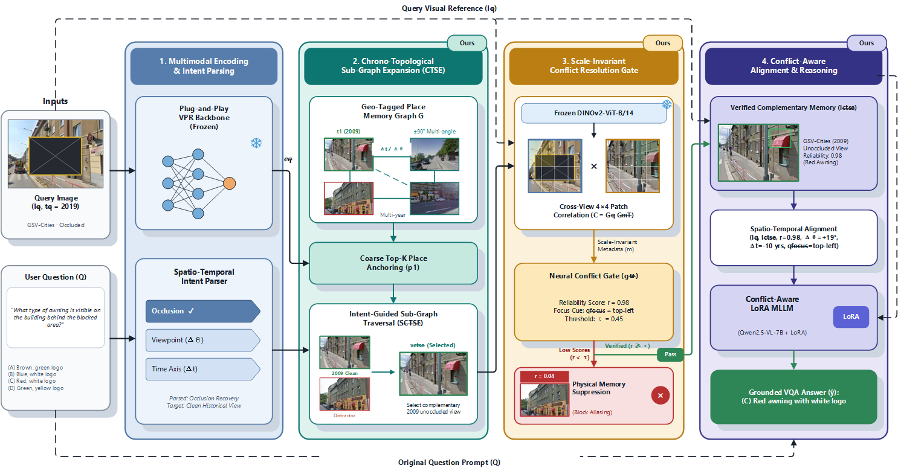

Visual place recognition × multimodal reasoning
Beyond
appearance
lookup.
What can a place remember? ChronoVPR-VQA retrieves and verifies complementary street views across heading and time, then uses them to answer questions beyond the current frame.
- Best VQA accuracy
- 73.75%
- Gain vs. naïve VPR
- +25.59–27.18 pp
- Test questions
- 8,047
- VPR backbones
- 17
Evaluation
Explore the evidence.
Compare frozen retrievers, inspect the contribution of each component, or follow accuracy as retrieval noise increases.
VQA accuracy across 17 retrievers
Each pair shows the naïve and full-system VQA accuracy for one retriever.
Select a point or a table row for exact values.
View exact values
BoQ-DINOv2 breakdown
Where does memory help?
Compare the same evaluation protocols for each task and dataset. Nordland and SPED are test-only holdouts.
Method
From place to evidence.
Retrieve a physical anchor, navigate its memory graph, and verify the evidence before reasoning.
Encode the query
A frozen VPR model retrieves a place anchor. The question identifies the relevant occlusion, heading or time shift.
Expand the memory
Chrono-Topological Sub-Graph Expansion (CTSE) searches for a complementary view around the anchor.
Verify the match
The Conflict Gate scores spatial DINOv2 patch correlations and scale-invariant metadata.
Reason with context
A LoRA-calibrated Qwen2.5-VL-7B reasoner uses the view pair, geometry, timing and gate score.
View the full architecture

Dataset
30,113 places.
Three ways to reason.
Blind-filtered multiple-choice questions span six VPR datasets and ask about occluded evidence, views outside the frame, and change over time.
Dataset splits
Read the dataset cardInspect a benchmark question
Annotation preview. Select an option to reveal the reference answer and evidence summary.
Research artifacts